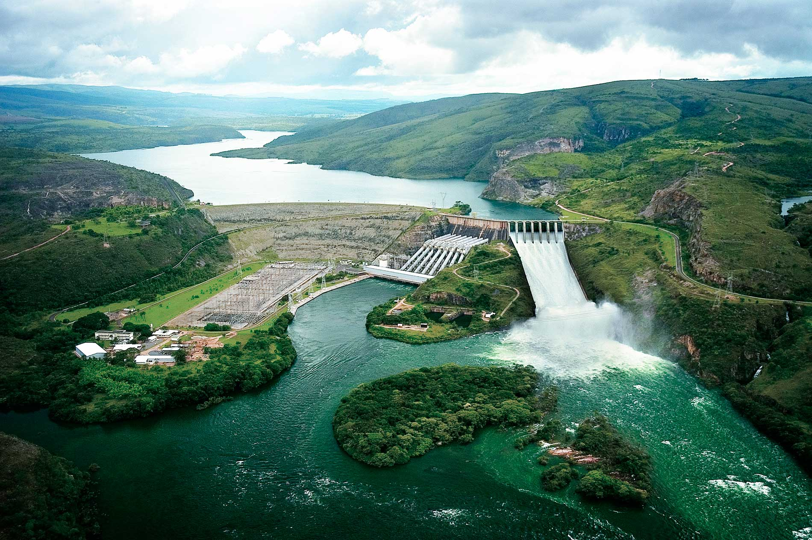

A energia hidrelétrica é uma forma de obter eletricidade por meio das forças das águas. As usinas capazes de gerar esse tipo de energia são chamadas de usinas hidrelétricas.
A energia hidrelétrica representa 16% da energia presente em todo o mundo de acordo com a Agência Internacional de Energia (IEA), sendo a terceira fonte mais usada para a produção de energia do mundo, perdendo apenas para o gás natural e o carvão.
No Brasil, a principal forma de energia utilizada é a hidrelétrica, onde apenas 33% da energia utilizada no país não é dessa fonte.

A geração de energia hidrelétrica resulta da transformação da energia cinética da água em movimento. Esse processo ocorre através de um conjunto de estruturas, que compõem as usinas hidrelétricas, especialmente os equipamentos instalados na casa de força, como as turbinas e o gerador.
Os reservatórios das usinas armazenam grandes volumes de água, que possuem energia potencial gravitacional. Quando a água é liberada do reservatório, ela passa pela casa de força com alta velocidade, movimentando as pás das turbinas e convertendo energia potencial em energia cinética.
As turbinas acionam os geradores, que convertem a energia cinética em energia elétrica. Após passar por esses processos, a água é redirecionada para o rio através do escoadouro, enquanto a energia hidrelétrica gerada é transmitida para a rede de distribuição e distribuída para consumidores finais, como residências, empresas e indústrias.
A energia hidrelétrica apresenta uma série de vantagens em relação a outras fontes de energia, sendo sua relação custo-benefício a principal delas. A maior vantagem das usinas hidrelétricas é que elas utilizam água, uma fonte renovável e natural, para gerar energia.
Além disso, elas emitem menos poluentes atmosféricos do que outras fontes de energia, como as usinas termelétricas. Além disso, os custos operacionais das usinas hidrelétricas são baixos, e seus reservatórios podem ser usados para outras finalidades, como atividades de turismo e lazer.
.